32 different directions for how GymQuest could look. Each one is a clickable prototype with the same sample week of training, so you can compare them fairly. Open one and use the tabs at the bottom. These are mockups only, not the real app.
Inspired by Instagram, TikTok, X, YouTube, Facebook, Strava, a paper notebook and WhatsApp.
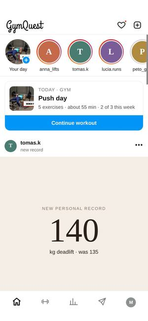
Instagram’s grammar applied to training: friends’ workouts as story rings, today’s plan pinned as the first post, a profile grid where every square is a finished workout.
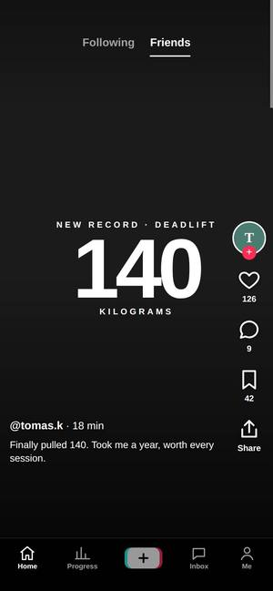
TikTok’s full-screen vertical rhythm. Friends’ lifts play one per screen; your own workout becomes a stack of cards — one exercise per screen, swipe up for the next, huge set buttons you can hit with sweaty fingers.
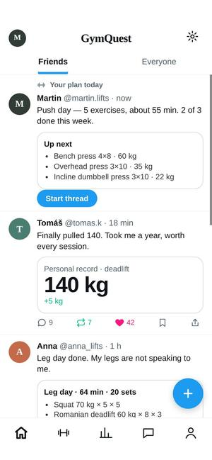
Twitter / X: text first, compact, fast to read. A workout is a thread — every exercise is a reply under the plan, sets are pills you tap. Progress reads like post analytics.
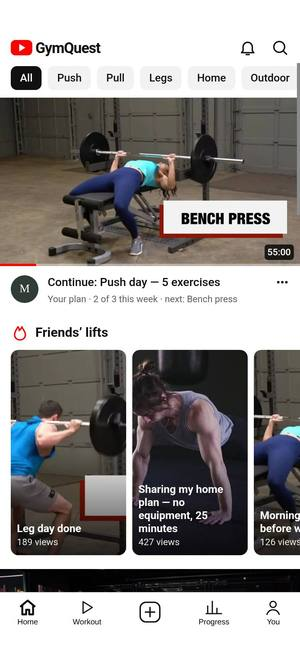
YouTube: plans are videos with thumbnails and durations, a half-finished workout is “continue watching” with the red progress bar, and the workout screen is a watch page — exercise video on top, sets as chapters, the rest of the plan as “Up next”.
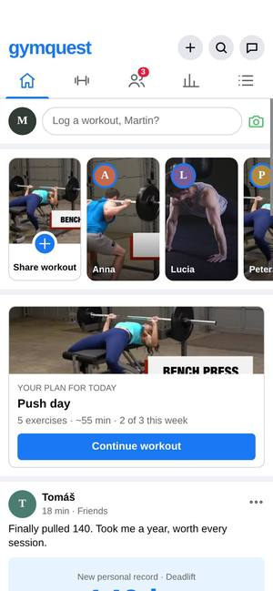
Facebook: grey canvas, white cards, the blue that everybody recognises. Training is social and local — a “log a workout” composer, gym groups, group sessions as events, reactions instead of likes.
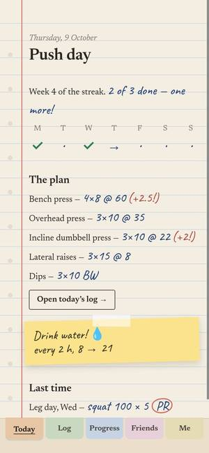
The opposite of an AI app: the paper training log every lifter used to carry. Ruled pages, a red margin, numbers in handwriting, records circled, sticky notes for reminders and coloured dividers as navigation.
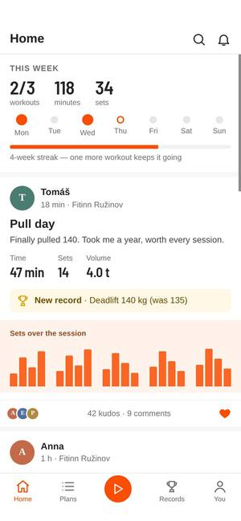
Strava for the weight room. Every workout is an “activity” with time, sets and volume, a little chart of your sets, kudos from friends; records become segments with a leaderboard; one big orange button starts the clock.
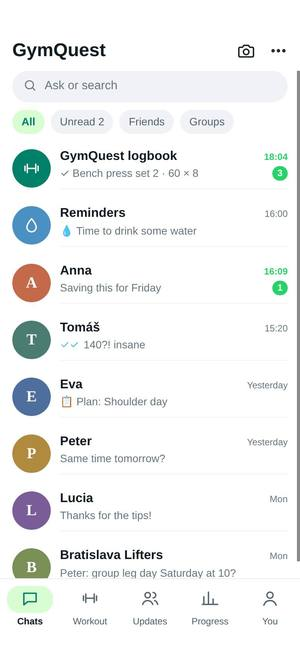
WhatsApp: everything is a conversation. Your workout is a chat with the GymQuest logbook — tap a quick reply to log a set, the plan comes in as a message card, friends share workouts as status updates, and reminders arrive like messages.
Inspired by Pinterest, Snapchat, BeReal, Spotify, Bumble, Duolingo, Reddit and Discord.
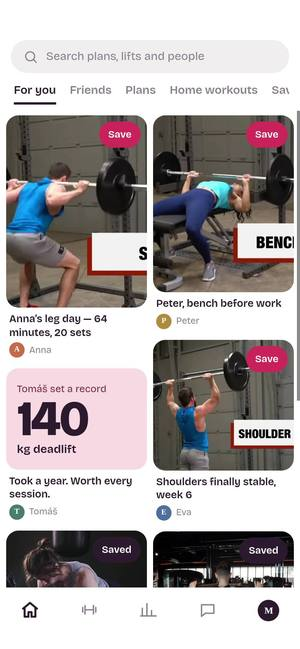
Pinterest for training. Plans, friends’ lifts and progress photos sit on one masonry board you collect from. Today’s workout is its own board — every exercise is a pin you mark done, and you can invite a friend to the board.
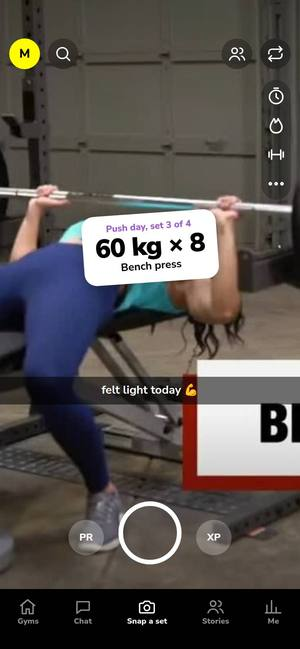
Snapchat logic for the gym. The app opens on the camera: snap a set and it gets a sticker with the weight. The map shows which friends are training and where. Every friend has a gym streak — days you both trained — so you push each other.
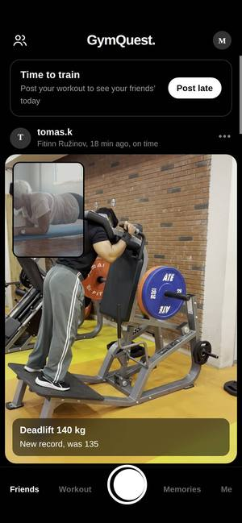
BeReal for training. Once a day the app says “time to train”; you post one honest two-photo moment from the gym — and you only see your friends’ workouts after posting yours. Late posts say so. No filters, no colour, nothing but the work.
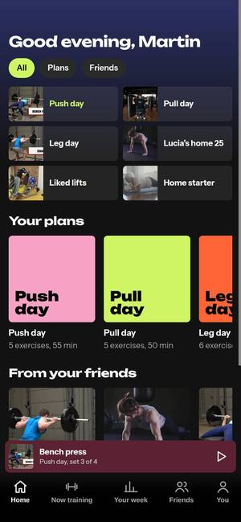
Spotify and Wrapped. Plans are albums, the workout is the now-playing screen — an exercise is a track, the big button logs a set, the queue is what’s left. Every week ends with a Wrapped-style story in loud colour blocks that you can share.
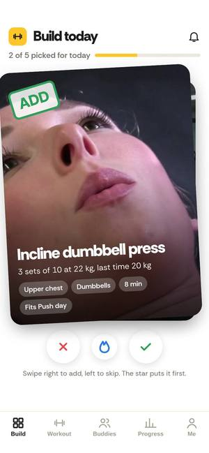
Bumble’s cards for deciding what to train. Swipe right to add an exercise to today, left to skip it, tap the flame to do it first. During the workout, swiping the card right logs a set. The same deck finds gym buddies with your schedule.
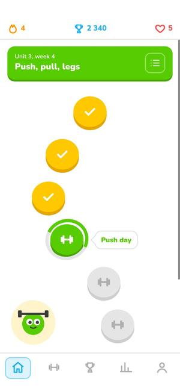
Duolingo’s level path, applied to training. Each workout is a stop on a winding path, five stops finish a unit, and the chest at the end pays out XP. Lifting heavier than last time feels like a correct answer. Friends compete in a weekly league with promotion and demotion.
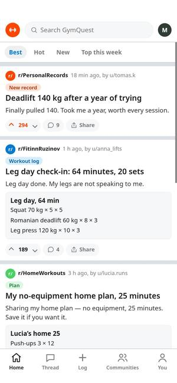
Reddit’s threads for people who want to talk about training, not just show it. Gyms and programs are communities, good advice is upvoted to the top, and replies nest so a form check can become a real conversation. Your workout log is a post you can share in one tap.
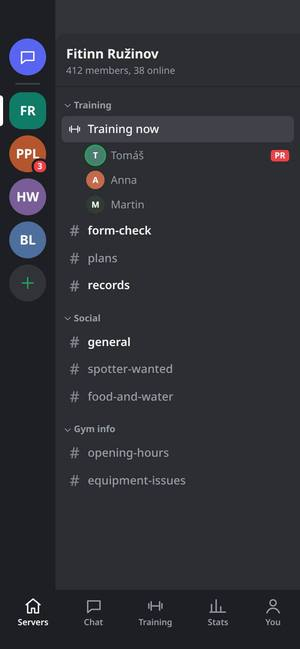
Discord’s servers, one per gym or friend group. Channels separate form checks, plan sharing and banter. The live “Training now” room shows who is mid-workout and on which set, so training alone at 18:00 still feels like training together.
No social app as a starting point. From the cleanest to the heaviest.
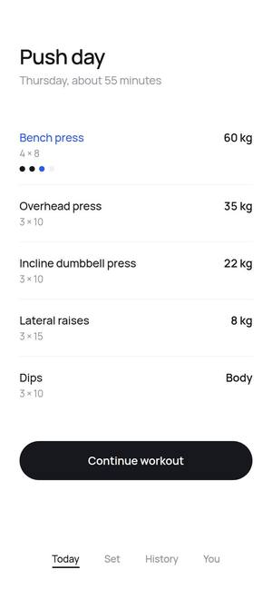
The cleanest version. No cards, no icons, no badges. White space, one typeface, one blue for whatever needs your attention right now. The app gets out of the way so the only thing on screen during a set is the weight.
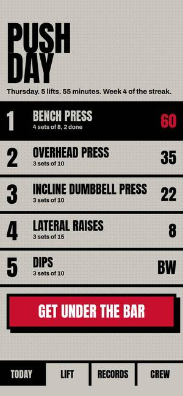
The heaviest version. Thick black rules, condensed type that fills the screen, concrete grey with a single blood red. It looks like a poster bolted to a gym wall. The current weight is 200 pixels tall so you can read it from the bench.
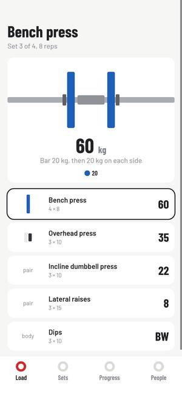
Every colour comes from competition weight plates: red 25, blue 20, yellow 15, green 10. The app shows what to load on each side of the bar, drawn to scale, so you never do plate maths between sets. Everything else stays neutral grey like a steel bar.
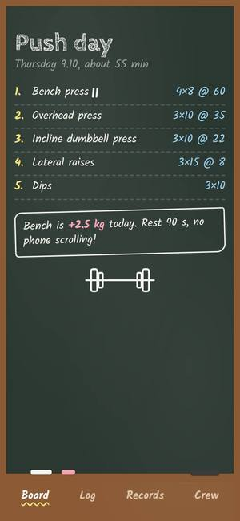
The whiteboard by the squat rack, but on your phone. Today’s workout is written up like a coach’s board, done sets get crossed out, and records are circled. Handwriting makes it feel like a person planned it, not software.
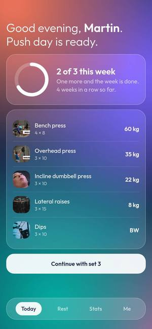
Soft and calm. Frosted panels float over a slow wash of warm colour, the type is light, and nothing has a hard edge. This one is for people who find gym apps loud, and for the rest timer, which is most of what you look at between sets.
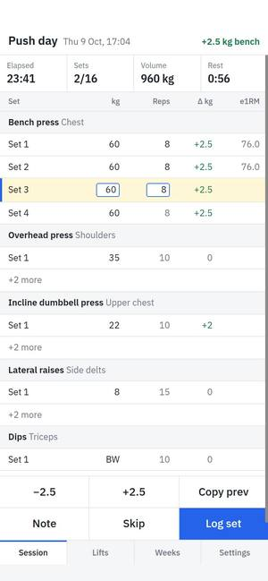
For people who used to track training in a spreadsheet and miss it. Dense tables, real numbers, change versus last time in every row, and estimated one-rep maxes. Small type, many rows, no decoration. You type a weight straight into the cell.
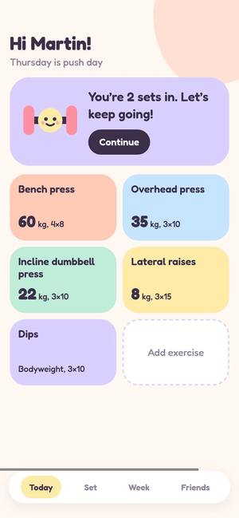
Friendly and a little silly, for beginners who are nervous about the gym. Pastel colours, round shapes, a small dumbbell character that cheers you on, and words like “nice” instead of “PR”. Nothing on screen should make anyone feel they are not strong enough yet.
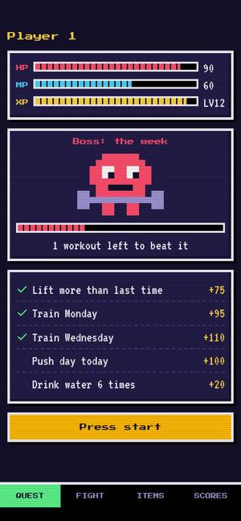
GymQuest already has XP and levels, so this one leans all the way in. Pixel art, a CRT glow, and the weekly goal as a boss with a health bar. Every set you log is an attack, rest is your mana refilling, and achievements are items in an inventory.
Each one starts from something in the gym world: a locker, a receipt, a dial, a belt.
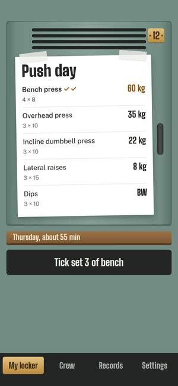
The changing room is where a workout really starts. Your plan is a sheet taped inside locker 12, sets get ticked in pen, and your friends are the lockers next to yours. Painted steel, a brass number plate and tape are the whole palette.
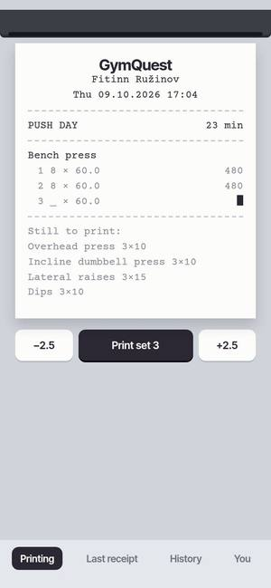
Every workout prints out as a receipt: each exercise a line item, weight times reps, a total at the bottom, and a red stamp when you set a record. During training the receipt is still printing. Your history is a spike of receipts, and sharing one is sharing a photo of paper.
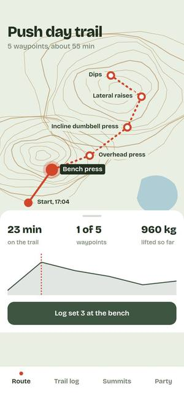
A workout drawn as a trail. Each exercise is a waypoint on a hiking map, and the elevation profile is how hard each part is. Records become summits you have climbed. Moss, contour brown and a red route line, like a printed walking map.
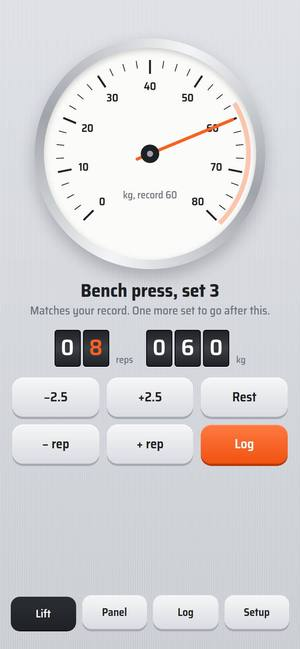
Built like a piece of gym equipment: brushed aluminium, physical buttons, a needle and rolling counters. The big dial shows today’s weight against your record, so you can see how close you are without reading a number. Everything clicks.
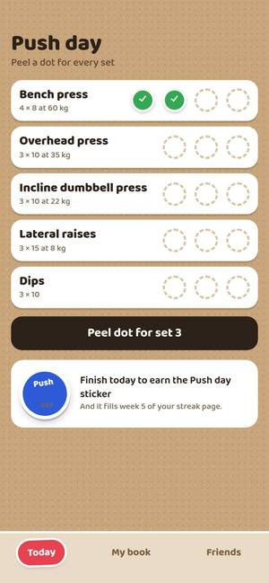
A sticker book on kraft card. Every finished set peels off a little green dot, every workout earns a sticker, and achievements are the big shiny ones with empty dashed outlines waiting for them. Friends can trade stickers to say well done.
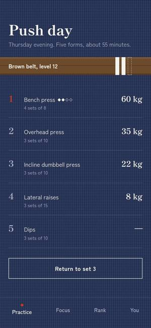
Training as practice, not competition. Indigo cloth, a calm serif, and levels shown as belt colours that take months to earn. During a set the screen shows a single brush circle with the weight inside it. Achievements are red hanko stamps.
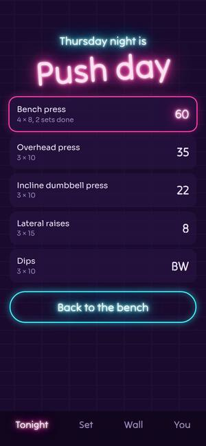
For the late-evening crowd. The app is a brick wall with neon signs: the plan is the open sign, the current weight glows like a tube, and finished sets light up like marquee bulbs. The leaderboard is a sign on the wall too.
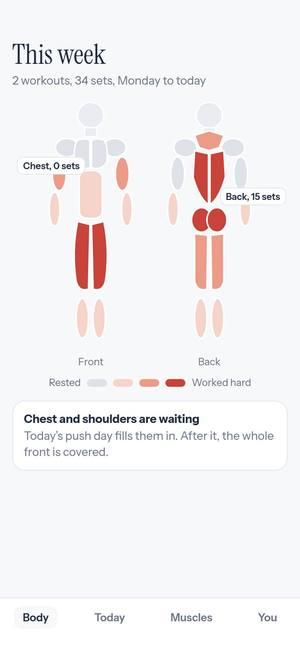
The body is the home screen. A front and back figure fill in by how many sets each muscle got this week, so a missed leg day shows up as a pale pair of legs. Pick a muscle to see the exercises that train it. Clinical and quiet, with one warm heat scale.